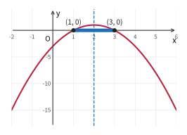

ホーム ＞ 数学I ＞ 2次不等式
\(ax^2+bx+c>0\) の解が \(1<x<3\) であるとき、\(cx^2+bx+a<0\) の解を求めよ。
解の形から \(a<0\)、\(b,c\) を \(a\) で表す。新しい不等式に代入し\(a\) でわる（\(a<0\) で向きが逆）。因数分解して解く。
解が \(1<x<3\) なので \(a<0\)、2解は \(1,\ 3\)。
\(ax^2+bx+c>0\) の解（放物線が \(x\) 軸より上の部分）が太線。上に凸なので \(a<0\)。

\(cx^2+bx+a<0\) を \(a\) でわる。\(a<0\) なので不等号の向きが逆になる。
\(3 x^{2} - 4 x + 1=(x-1)(3x-1)\)。2解は \(x=1,\ \dfrac{1}{3}\)。\(x^2\) の係数 \(3\) が正なので
【答案（テストに書く形）】
答